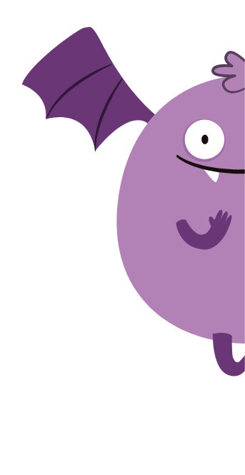
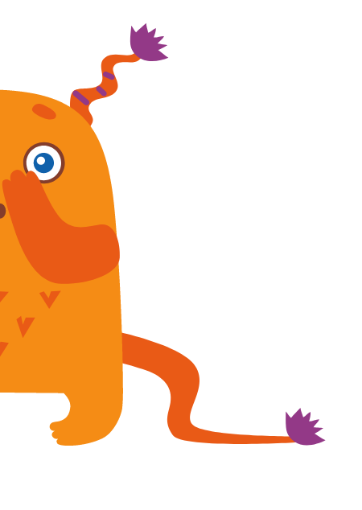
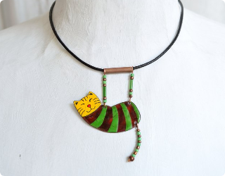

@@include('layout/scripts.html')
配對結果
@@include('layout/header.html')
相配指數
68%
優點：你們都喜歡新鮮，是一起發現樂子的好夥伴！


缺點：對於金錢的價值觀，可能要多多溝通唷。
建議增運配件

解析：雙子屬於智慧型，不喜歡固定的既成關系、生活、知識，喜愛變化，也能掌握與操縱變化。像這么優質的對象，自然會使得也熱愛活潑變化的手萬分心動。但您們兩個星座恰如一個北極、一個南極，南轅北轍，在一起之後不是大好的互補...
付費解鎖更多
星星解鎖更多
@@include('layout/footer.html')